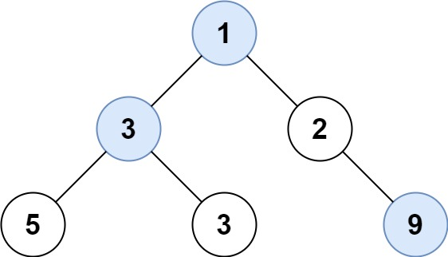

515. 在每个树行中找最大值
BFS 逐层走：进循环先记下队列长度（本层结点数），把这一整层的最大值收进答案。
思路
- 队列
q装「还没处理的结点」，size = q.size()就是本层的结点数。 - 一层之内弹
size个：更新max，孩子进队；弹完把max追加进答案。 max用Integer.MIN_VALUE起步：结点值可以是−2^31，不能用0当初值。
图解
最优解
1import java.util.*;2 3class Solution {4 public List<Integer> largestValues(TreeNode root) {5 List<Integer> ans = new ArrayList<>();6 Queue<TreeNode> q = new ArrayDeque<>();7 // 空树直接返回空表；非空先让根进队8 if (root != null) q.add(root);9 // BFS 逐层：先记下本层结点数，一层之内取最大10 while (!q.isEmpty()) {11 int size = q.size(), max = Integer.MIN_VALUE;12 for (int i = 0; i < size; i++) {13 TreeNode node = q.poll();14 max = Math.max(max, node.val);15 if (node.left != null) q.add(node.left);16 if (node.right != null) q.add(node.right);17 }18 ans.add(max);19 }20 return ans;21 }22}题目
给定一棵二叉树的根节点 root ，请找出该二叉树中每一层的最大值。
示例1：

输入: root = [1,3,2,5,3,null,9] 输出: [1,3,9]
示例2：
输入: root = [1,2,3] 输出: [1,3]
提示：
- 二叉树的节点个数的范围是
[0,104] -231 <= Node.val <= 231 - 1
题面取自力扣当前版本。
数据快照 2026-11-04。题面版权归力扣所有，本站点仅供本人学习使用，请勿对外发布。